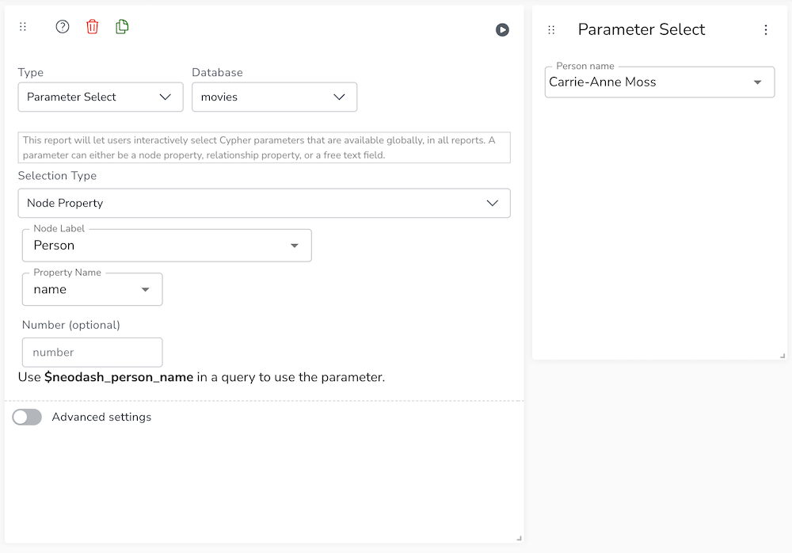
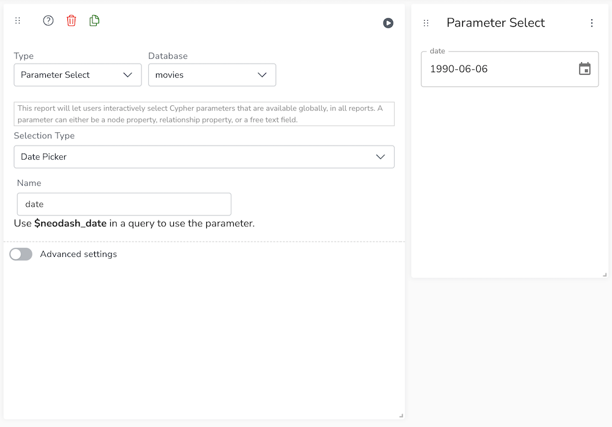
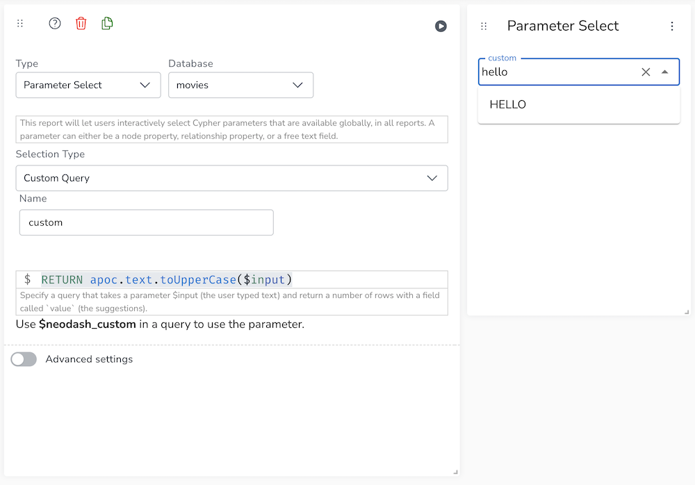

Parameter Select
|
This documentation pertains to the (legacy) unsupported version of NeoDash. For users of the supported NeoDash offering, refer to NeoDash commercial. |
Parameter select reports provide you with an easy way to add interactivity into your dashboards.
Simply put, a parameter select report lets users set a Neo4j query parameter (e.g. $neodash_person_name) dynamically. This means that your reports can be created to show different data depending on the value of a parameter.
There are five types of parameter select reports:
-
Node property-based selections
-
Relationship property-based selections
-
Free text selections
-
Date picker selections
-
Custom query selections
Examples
Node Property Select
A node property selector lets users choose a property from a node with a given label, to be used as a parameter in the dashboard.

Date Select
A date selector lets users specify dates using a calendar widget, or by entering a date format.

Custom Query Select
A custom query selectors lets you specify a custom selector widget, where user suggestions are populated based on an $input variable that is passed down into your custom query.

Advanced Settings
| Name | Type | Default Value | Description |
|---|---|---|---|
Clear Parameter on Field Reset |
on/off |
off |
If enabled, removes the global parameter completely when the field is cleared. This may break some visualizations. If disabled, sets the parameter value to “” (empty string) when the input field is cleared. |
Multiple Selection |
on/off |
off |
If enabled, allows user to select multiple choices. Parameter will be then an array of selections. |
Manual Parameter Save |
on/off |
off |
If enabled, adds a confirmation button in order to propagate the selection into the dashboard parameter. |
Enable Manual Label/Property Name Specification |
on/off |
off |
If enabled, does not enforce you to select a node label/property using an auto-complete field, instead, you can enter any value. This is useful for large datasets where the autocomplete field is too slow to render. |
Helper Text (Override) |
Text |
(none) |
Text to show above the user input field. This will override the autogenerated text from the node/relationship property pair. |
Report Description |
markdown text |
When specified, adds another button the report header that opens a pop-up. This pop-up contains the rendered markdown from this setting. |